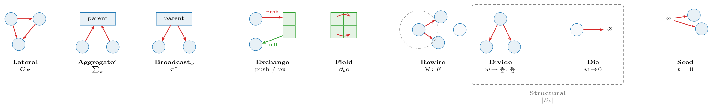

The abstraction
Hierarchical sets, fields, and four operators
The container is built from two kinds of object — sets and fields — and a small algebra of operators that move state between them. This is the missing primitive: the place where particle mechanics, cellular interaction, neural dynamics, and reaction networks all become the same kind of thing.
Two entities: sets and fields
A set \(S_k\) is a discrete collection of like entities at scale \(k\) — metabolites, particles, cells, populations, organisms. Adjacent scales are linked by parent maps
\[\pi_k : S_k \longrightarrow S_{k+1},\]
where \(\pi_k(x)\) is the higher-level object that contains \(x\). A cell is built from two kinds of \(S_0\) entity — its particles (mechanics) and its metabolites (chemistry) — and \(\pi_0\) sends each of them to the cell it belongs to, so \(\pi_0(x)=c\) reads “\(x\) belongs to cell \(c\)”. The constituents of a given cell \(c\) are its fibre, the set of everything that maps to \(c\),
\[\pi_0^{-1}(c)=\{\,x\in S_0 : \pi_0(x)=c\,\},\]
so a cell simply is the collection of its particles and metabolites.

A field \(f:\Omega\to\mathbb{R}^q\) is a continuous quantity defined on its own grid — morphogen concentration, pressure, substrate stiffness. Fields are not part of the containment hierarchy: they neither contain nor are contained by cells. Instead, each field is bound to exactly one set level through an exchange relation (particle–grid transfer, cell sampling, or population-level secretion and sensing); these couplings are the operators below.
Four operators
A GNN is an operator \(\mathcal{O}\) returning a time-derivative contribution, dispatched by the relation it acts on. We use four kinds, one per relation the container admits:
\[ \begin{aligned} \textbf{Lateral}\quad & \mathcal{O}_E,\ E\subseteq S_k\times S_k && \text{(ODE interaction } + \text{ graph Laplacian)}\\ \textbf{Aggregate}\ \uparrow\quad & \textstyle\sum_{\pi}: S_k \to S_{k+1} && \text{(reduction over fibres of } \pi)\\ \textbf{Broadcast}\ \downarrow\quad & \pi^{*}: S_{k+1}\to S_k && \text{(lift along } \pi)\\ \textbf{Exchange}\quad & \mathcal{S},\mathcal{G}: S_k \leftrightarrow F && \text{(scatter / gather; bipartite)} \end{aligned} \]
Two pieces of notation: \(S_k\times S_k\) is the set of all node pairs, so an edge set \(E\subseteq S_k\times S_k\) is simply a graph on \(S_k\) — which nodes interact (e.g. neighbours within a cutoff radius, or a fixed connectome). And \(\mathcal{S},\mathcal{G}\) are the two halves of a field coupling: scatter \(\mathcal{S}:S_k\to F\) writes object state into the field, while gather \(\mathcal{G}:F\to S_k\) reads it back.
Lateral \(\mathcal{O}_E\). Message passing within one scale along the edges \(E\). It carries the within-scale physics: pairwise interactions (forces, adhesion, signalling) plus a graph Laplacian that diffuses or smooths quantities over the edges. Examples: particle–particle elasticity, cell–cell flocking or adhesion, neuron–neuron signal propagation.
Aggregate \(\textstyle\sum_\pi\) (up). Pools each parent’s fibre into one quantity — a cell’s position is the mean of its particles, its metabolic state the sum over its molecules. This is how fine-scale dynamics are summarised into, and so move, the coarser object above.
Broadcast \(\pi^{*}\) (down). The adjoint of Aggregate: it copies a parent’s state to every child in its fibre, so a decision taken at the cell level (a body force, a polarity, a signalling output) is applied identically to all of that cell’s particles. Aggregate and Broadcast are a matched up/down pair on the same map \(\pi\).
Exchange \(\mathcal{S},\mathcal{G}\). Couples a set to a field: scatter \(\mathcal{S}\) deposits/secretes object state into the field, gather \(\mathcal{G}\) samples/senses the field back onto the objects. The relation is bipartite (objects \(\leftrightarrow\) grid); it is exactly the MPM particle–grid transfer (P2G/G2P) and chemotactic secretion/sensing.

Sets, fields, and these four operators are the entire vocabulary. The wager of Plexus is that this is enough to describe a complex living system — that everything from mechanics to morphogenesis to signalling is some composition of Lateral, Aggregate, Broadcast, and Exchange over a hierarchy of sets and fields.
Dynamics: a schedule
A simulation is a multi-rate composition of operators, declared as a Schedule. In math terms, one tick is the composition
\[\Phi=\mathcal{O}_n\circ\cdots\circ\mathcal{O}_1,\]
and the dynamics is its iteration \(x_{t+1}=\Phi(x_t)\) — a discrete flow (with “multi-rate” meaning some operators fire only on every \(k\)-th tick). Each operator is pure: instead of editing the state in place, it only returns its contribution — a delta \(\Delta_i\) (a time-derivative term) for the sets it touches. The schedule sums the deltas acting on each set and integrates once per tick,
\[x_{t+1}=x_t+\Delta t\textstyle\sum_i\Delta_i.\]
Two consequences follow: several operators may act on the same set in one tick (their deltas simply add — none overwrites another), and because nothing is mutated in place, gradients flow through the sums and the integrator, so the whole rollout stays differentiable. The LLM searches over schedules and operator parameterizations — one well-defined action space instead of per-domain code.
Glossary
| Concept | Set/operator term | Symbol | Code |
|---|---|---|---|
| collection of like nodes | set (level) | \(S_k\) | Level |
| a single node | element | \(x\in S_k\) | row of Level.state |
| learnable per-node code | embedding | \(a_i\) | Level.embedding |
| containment | partition | \(\pi_k\!:\!S_k\!\to\!S_{k+1}\) | Level.parent |
| within-set links | relation | \(E\subseteq S_k\times S_k\) | Level.edge_index |
| continuum quantity | field | \(f:\Omega\to\mathbb{R}^c\) | Field |
| dynamics (GNN) | operator: ODE+Laplacian | \(\mathcal{O}\) | Operator |
| within-set op | lateral | \(\mathcal{O}_E\) | Lateral |
| up op | reduction over fibres | \(\sum_\pi\) | Aggregate |
| down op | lift | \(\pi^{*}\) | Broadcast |
| set \(\leftrightarrow\) field op | transfer | \(\mathcal{S},\mathcal{G}\) | Exchange |
| the container | hierarchy | \((S_\bullet,F_\bullet,\pi_\bullet)\) | Hierarchy |
| the model | composition of ops | \(\mathcal{O}_n\!\circ\!\cdots\!\circ\!\mathcal{O}_1\) | Schedule |
The abstraction – Plexus The abstraction – Plexus The abstraction – Plexus Plexus Hierarchical sets, fields, and four operators Hierarchical sets, fields, and four operators A language and calculus of living systems.